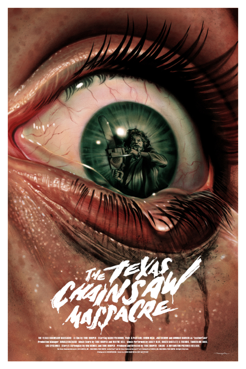

Figure 1
displaying a poster of the movie Texas Chain Massacre. It includes a big tearing eye in the center of the poster. Within the iris there is a reflection of a figure holding a chain saw walking towards you. Under the eye, the title Texas Chain Massacre is displayed in a rough script font.
See
See
We see to believe, we see to understand and we see to justify. We believe our seeing is proof positive. We are relying on our sense of vision to capture the action or mood. The act of seeing is widely used in language, sayings and symbolism; Let's see, I see, I see what you mean, I see what you did there, I see where you're coming from, First see, then believe, See for yourself, You see?, See you!
We see to believe, we see to understand and we see to justify. We believe our seeing is proof positive. We are relying on our sense of vision to capture the action or mood. The act of seeing is widely used in language, sayings and symbolism; Let's see, I see, I see what you mean, I see what you did there, I see where you're coming from, First see, then believe, See for yourself, You see?, See you!